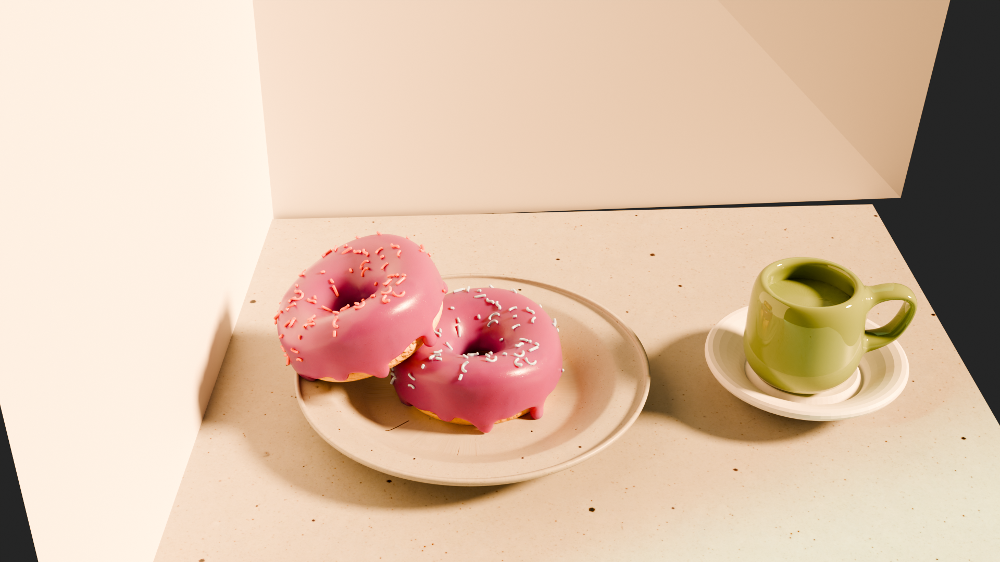

Donut Rendering In Blender
A donut, modeled and rendered in Blender. Below is the final render, followed by an interactive 3D version you can rotate and zoom, drag to look around :) .

𓅓— END —𓅓
A donut, modeled and rendered in Blender. Below is the final render, followed by an interactive 3D version you can rotate and zoom, drag to look around :) .
